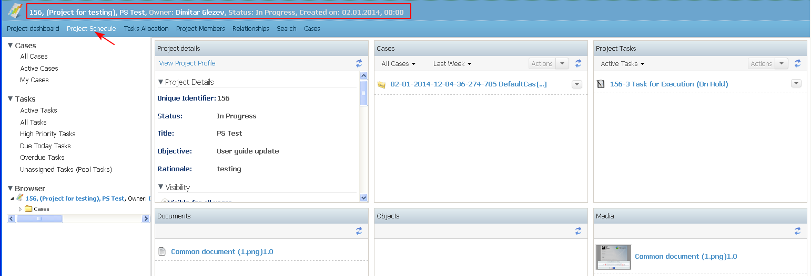

The topic describes who and when could view a project schedule and what is its default view.
Preconditions
1. Every user assigned as a resource to a project could view its Project Schedule.
The PM and team leads could edit the whole schedule. Other users are allowed to edit it to the extent, allowed by their individual permissions.
For example, an user, assigned to a task, may edit the estimated effort for that task.
2. A project schedule could be opened by the PM for review only after all initial project details are captured: Project name, Type of project, etc.
- The user opens the project schedule from "Project Schedule" link in the project dashboard.

- By default the project schedule screen is divided into the following sections: Tasks (1) view , Gantt chart (Schedule) (2) view, Resources (Team) (3) view
1. In the Tasks view section are listed all tasks with their descriptive names, organized into sub-projects/cases and summary tasks.
The Tasks view section is the main section in which is created the project timeline and are entered tasks details. The section is in the view of a table, where each row is a new task.
The specific task information is listed in columns, which are the following by default: ID, Name, Estimated effort, Start date, End date, Assignee, Task Type,Task status
The columns could be re-arranged by the user via drop down menu of available metadata. The system provides a simple means to reset the column layout and sort order to the default settings. If the user rearranges the column layout, and/or column sort order, the system shall continue to display in this order until it is changed again or reset to the default settings. The user may add new columns (4).

The task details of any task under the Project Task are reviewable by selecting the task ID for detailed view. When detailed view is closed, the user's focus is returned to the previous location. Task information is available also via the task in the schedule (1-2).

1.1 The Tasks view section of a project schedule by default consists of:
- Project summary task - this is the main holder task - a task with name the name of the project. The task start date and end date are initially empty and are calculated based on the children's start and end date. The task type is "Project"
- Sub-project summary tasks - for each sub-project automatically with its creation is created a holder task in the project schedule. The task start date and end date are initially empty and are calculated based on the children's start and end date. The task type is "Sub-project".
- Empty table rows - where the PM and team leads could start adding tasks
2. The project schedule Gantt chart view illustrates:
- the start and finish dates of leaf elements and summary elements of a project
- the task assignee
- the dependency (i.e., predecessors and successors) relationships between tasks
- the current task status using percent-complete shadings - the % complete shading is calculated by the system using data in the estimated and actual effort fields for tasks that are not completed.
Note that the estimated effort is a required field when a task is started and the actual effort may be updated any time after a task is started. Completed tasks should show 100% (irrespective of actual effort).
3. The Resource view section shows all resources, already assigned to a project with their names, job titles and system roles.
For each user is displayed also information of the estimated effort hours for the project, and % of total project hours.
The resources which are over-subscribed are colored in red.
An user from the Resource view section could be dragged and dropped into a task in the Task view section, and thus to become an assignee of the task.
For more information on a resource see "View resource allocation on tasks".